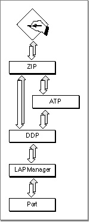

Legacy Document
Important: The information in this document is obsolete and should not be used for new development.
Important: The information in this document is obsolete and should not be used for new development.


About ZIP
The Zone Information Protocol (ZIP) provides applications and processes with access to zone names. A zone is a logical grouping of nodes in an AppleTalk internet, and each zone is identified by a name. A zone name is typically used to identify an affiliation between a group of nodes, such as a group of nodes belonging to a particular department within an organization.ZIP maintains the mapping of networks and the zones they include for all networks belonging to an AppleTalk internet:
On each router node in the internet, ZIP builds a zone information table that includes each network's number (extended networks have network number ranges) in association with the network's list of zones. Nodes that are not routers, such as end-user systems, do not contain a zone information table. However, a portion of ZIP is implemented on each nonrouter node so that applications and processes can gain access to their own node's zone name, names of all the zones on their local network, or names of all the zones throughout the internet. The .XPP driver implements the part of ZIP that is on nonrouter nodes, and it provides an interface that allows an application or process to request zone name information in a transaction-based dialog. ZIP uses the transaction-based services of ATP to transport requests from workstation nodes to router nodes. Figure 4-1 shows ZIP and its underlying protocols. The portion of ZIP that is implemented on nonrouter nodes, such as workstations, uses the services of ATP.
- Every node on a network belongs to a zone; a node can belong to only one zone at
a time.- A nonextended network contains only one zone, and all nodes in that network belong to the same zone.
- A single extended network can contain nodes that belong to up to 255 different zones. A single zone can include nodes that belong to different extended networks. Each AppleTalk extended network has associated with it a list of the zones to which its nodes can belong. A node joining the network can select its zone from this list.
Figure 4-1 The Zone Information Protocol (ZIP) and the underlying AppleTalk protocols
